강남 9개 핵심 상권 종합 평가 완전 보고서 (V5.30)
분석 기간: 2022년 ~ 2024년 | 작성일: 2026-02-04
분석 목적: 강남 지역 9개 주요 상권을 대상으로 의원급 피부과 최적 입지 선정
분석 방법: 4차원 가중 평가 (경쟁 20% + 고객 40% + 인구 20% + 입지 20%)
세부 지표: 11개 세부 지표 기반 정밀 분석
압도적 고객 수요 | 경쟁 극심
균형 잡힌 지표 | 안정적
저경쟁 블루오션
상권 내 의원 및 피부과 점포 수를 기준으로 경쟁 강도를 평가합니다. 점포 수가 적을수록 진입 기회가 높습니다.
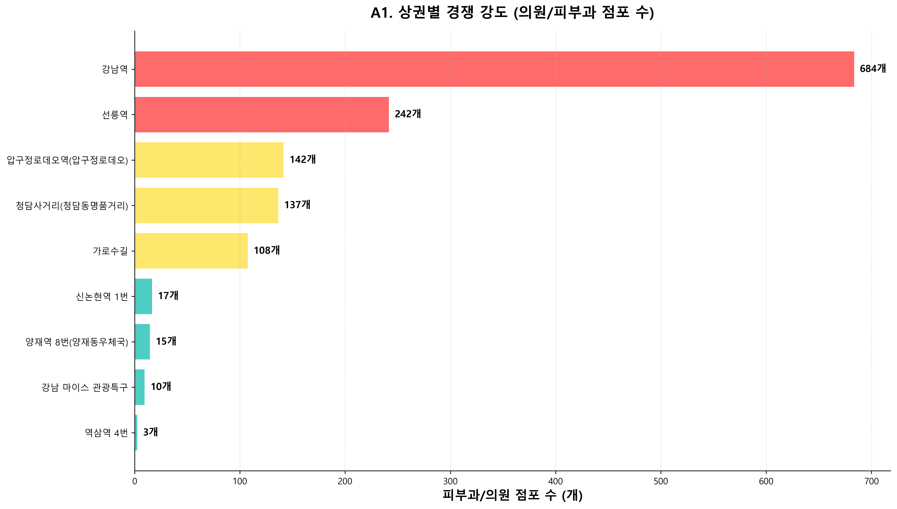
* 빨강: 고경쟁(200개 이상) / 노랑: 중경쟁 / 청록: 저경쟁
피부과의 주 고객층인 20-40대 여성 매출을 중심으로 고객 수요를 평가합니다.
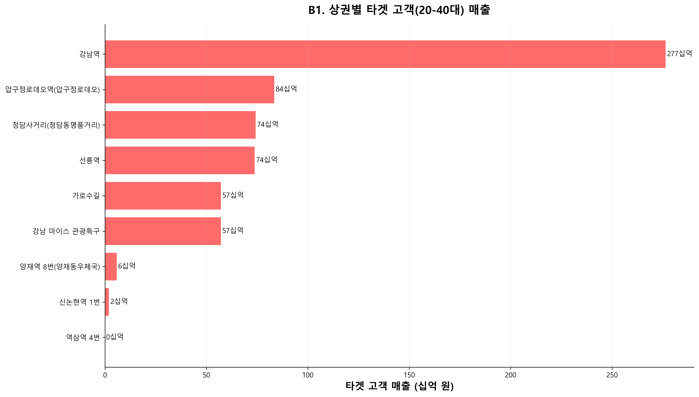
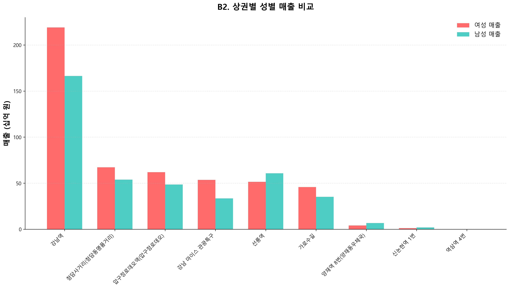
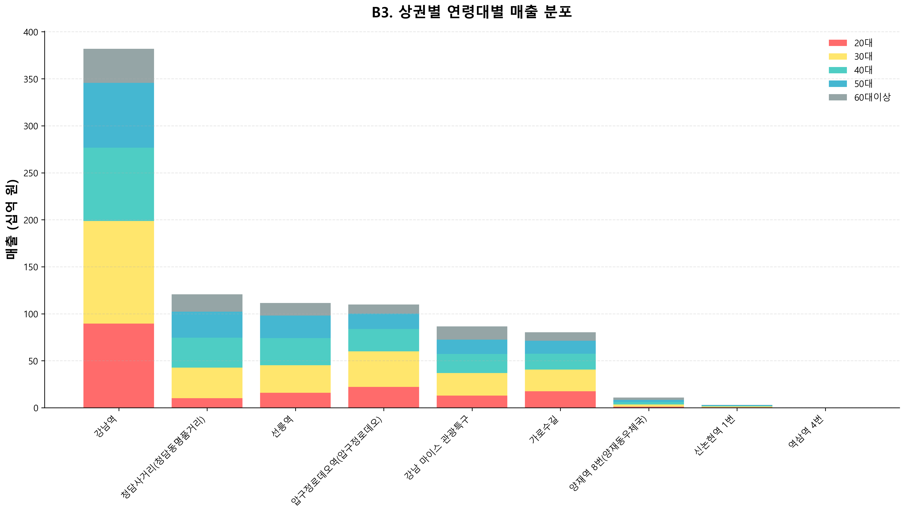
유동인구, 직장인구, 상주인구를 종합하여 잠재 고객 규모를 평가합니다. (가중치: 유동 40%, 타겟유동 30%, 직장 20%, 상주 10%)
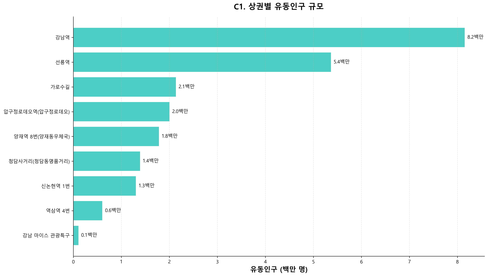
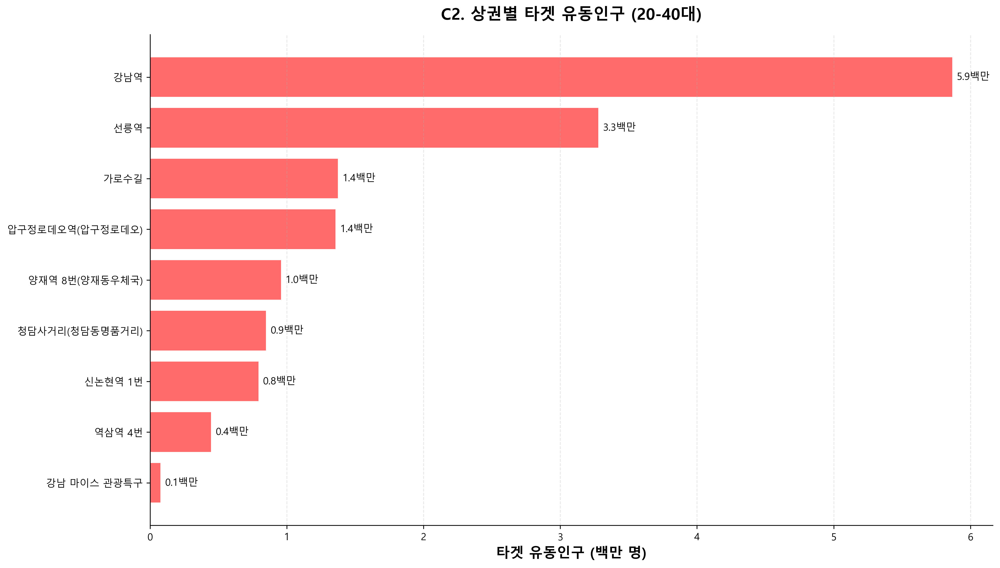
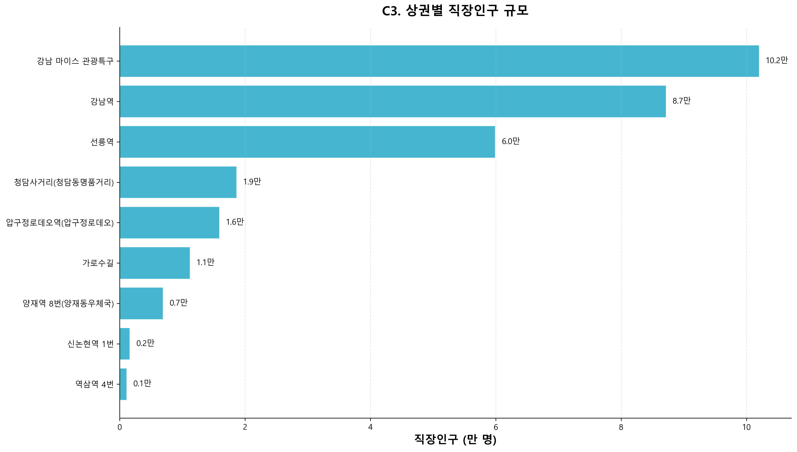
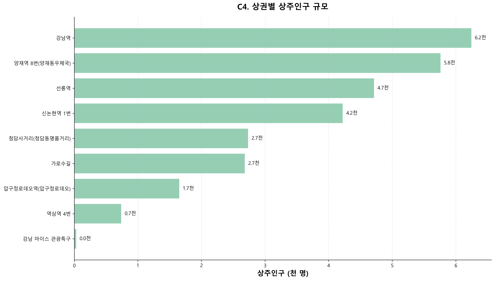
집객시설, 소득 수준, 의료비 지출을 종합하여 상권의 인프라와 소비력을 평가합니다. (가중치: 시설 40%, 소득 30%, 의료비 30%)
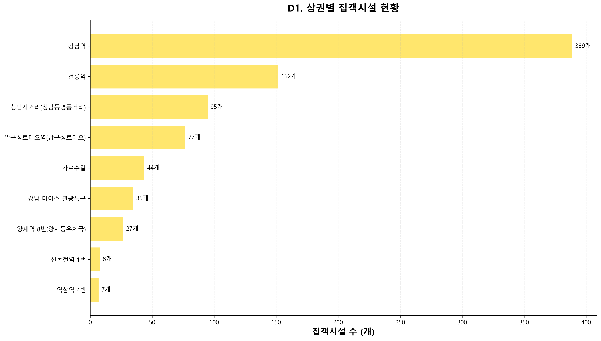
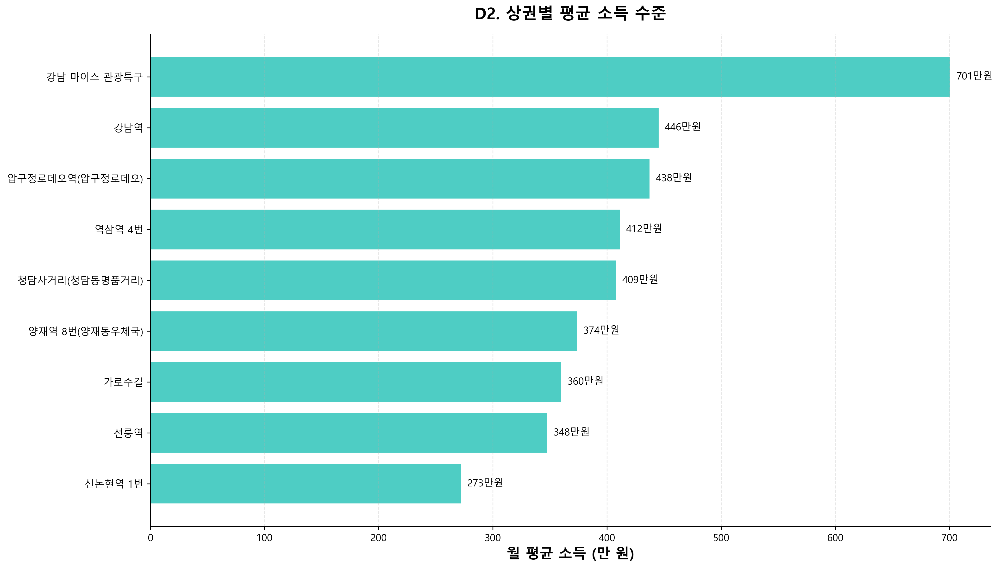
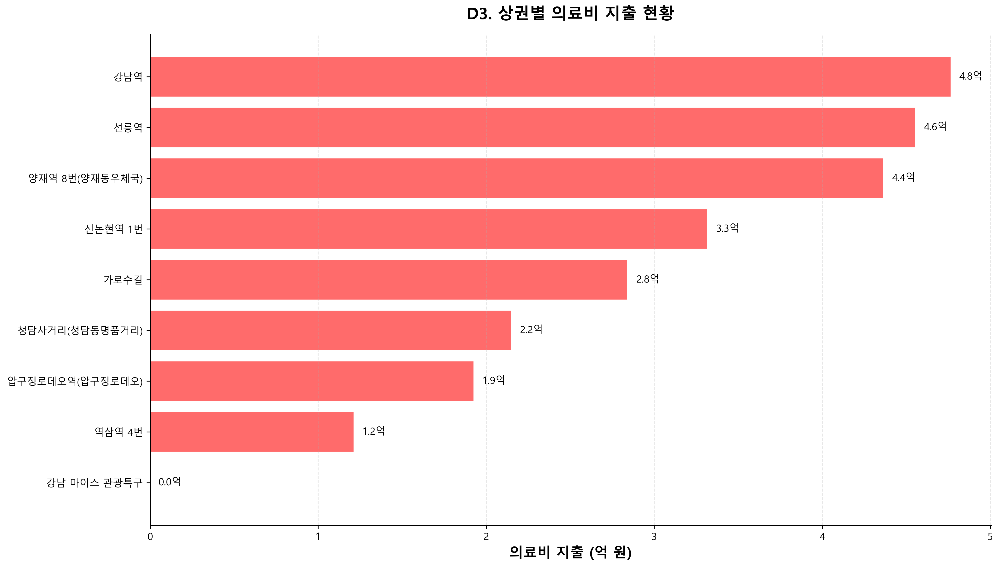
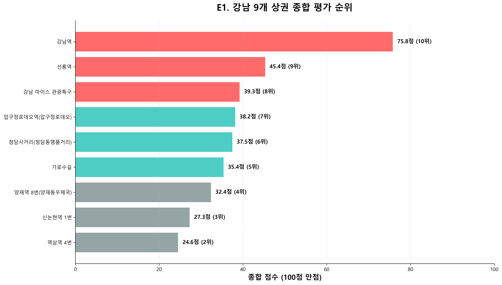
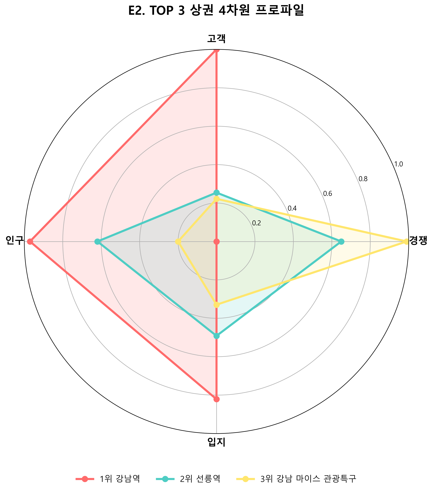
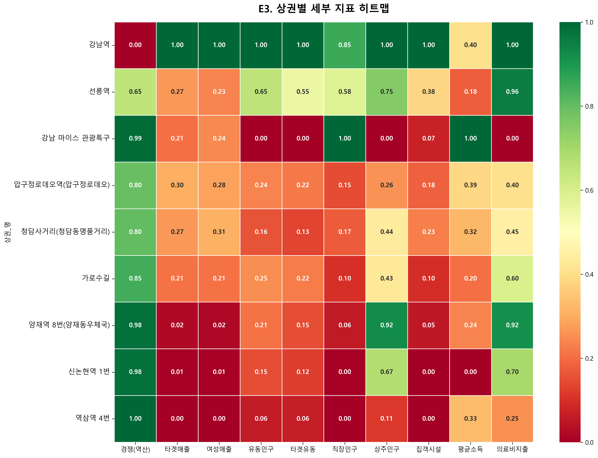
| 순위 | 상권명 | 종합점수 | 경쟁 | 고객 | 인구 | 입지 |
|---|---|---|---|---|---|---|
| 1 | 강남역 | 75.8 | 0.00 | 1.00 | 0.97 | 0.82 |
| 2 | 선릉역 | 45.4 | 0.65 | 0.25 | 0.62 | 0.49 |
| 3 | 강남 마이스 | 39.3 | 0.99 | 0.22 | 0.20 | 0.33 |
| 4 | 압구정로데오 | 38.2 | 0.80 | 0.29 | 0.22 | 0.31 |
| 5 | 청담사거리 | 37.5 | 0.80 | 0.28 | 0.18 | 0.32 |
| 6 | 가로수길 | 35.4 | 0.85 | 0.21 | 0.23 | 0.28 |
| 7 | 양재역 8번 | 32.4 | 0.98 | 0.02 | 0.23 | 0.37 |
| 8 | 신논현역 1번 | 27.3 | 0.98 | 0.01 | 0.16 | 0.21 |
| 9 | 역삼역 4번 | 24.6 | 1.00 | 0.00 | 0.06 | 0.17 |
| 차원 | 가중치 | 세부 지표 | 세부 가중치 | 차트 번호 |
|---|---|---|---|---|
| 경쟁 | 20% | 의원/피부과 점포 수 (역산) | 100% | A1 |
| 고객 | 40% | 타겟 매출 (20-40대) | 60% | B1 |
| 여성 매출 | 40% | B2 | ||
| 인구 | 20% | 유동인구 | 40% | C1 |
| 타겟 유동인구 (20-40대) | 30% | C2 | ||
| 직장인구 | 20% | C3 | ||
| 상주인구 | 10% | C4 | ||
| 입지 | 20% | 집객시설 수 | 40% | D1 |
| 평균 소득 | 30% | D2 | ||
| 의료비 지출 | 30% | D3 |
N(x) = (x - min) / (max - min)
※ 결과값 범위: 0 ~ 1 (0이 최소, 1이 최대)
| 지표 | 산출식 | 데이터 소스 |
|---|---|---|
| 경쟁 점포 수 | SUM(점포_수) WHERE 서비스_업종_코드_명 LIKE '%의원%' OR LIKE '%피부%' | 점포-상권.csv |
| 경쟁 점수 |
경쟁_점수 = 1 - N(경쟁_점포수) ※ 역산: 점포 수가 적을수록 높은 점수 |
산출값 |
| 지표 | 산출식 | 데이터 소스 |
|---|---|---|
| 타겟 매출 | 연령대_20_매출_금액 + 연령대_30_매출_금액 + 연령대_40_매출_금액 | 추정매출-상권.csv |
| 여성 매출 | SUM(여성_매출_금액) | 추정매출-상권.csv |
| 고객 점수 | 고객_점수 = N(타겟_매출) × 0.6 + N(여성_매출) × 0.4 | 산출값 |
| 지표 | 산출식 | 데이터 소스 |
|---|---|---|
| 유동인구 | SUM(총_유동인구_수) | 길단위인구-상권.csv |
| 타겟 유동인구 | 연령대_20_유동인구_수 + 연령대_30_유동인구_수 + 연령대_40_유동인구_수 | 길단위인구-상권.csv |
| 직장인구 | SUM(총_직장_인구_수) | 직장인구-상권.csv |
| 상주인구 | SUM(총_상주인구_수) | 상주인구-상권.csv |
| 인구 점수 | 인구_점수 = N(유동) × 0.4 + N(타겟유동) × 0.3 + N(직장) × 0.2 + N(상주) × 0.1 | 산출값 |
| 지표 | 산출식 | 데이터 소스 |
|---|---|---|
| 집객시설 | SUM(집객시설_수) | 집객시설-상권.csv |
| 평균 소득 | AVG(월_평균_소득_금액) | 소득소비-상권.csv |
| 의료비 지출 | SUM(의료비_지출_총금액) | 소득소비-상권.csv |
| 입지 점수 | 입지_점수 = N(집객시설) × 0.4 + N(평균소득) × 0.3 + N(의료비) × 0.3 | 산출값 |
종합점수 = (
경쟁_점수 × 0.20 +
고객_점수 × 0.40
+
인구_점수 × 0.20 +
입지_점수 × 0.20
) × 100
※ 결과값 범위: 0 ~ 100점
※ 고객 수요(40%)가 가장 높은 가중치 → 피부과 특성상 매출이 핵심 지표